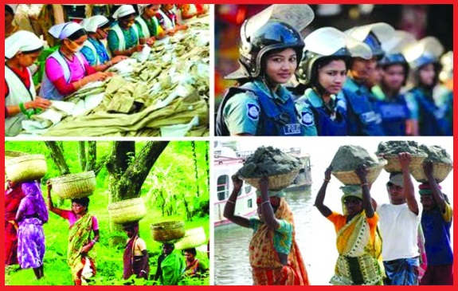

অন্যান্য বিষয়বস্তু

স্মার্ট অর্থনীতি

স্মার্ট নাগরিক

সমাজ অগ্রগতির গুরুত্বপূর্ণ সূচক শিক্ষার হার, নারীর ক্ষমতায়ন, চিকিত্সা ক্ষেত্রে উত্কর্ষ অর্জন এবং অবাধ সাংস্কৃতিক কর্মকাণ্ড। নারীর ক্ষমতায়ন প্রকাশিত হয় নারীর রাজনীতিতে অংশগ্রহণ, কর্মক্ষেত্রে নারীর অংশগ্রহণের হার, অবনমিত মাতৃমৃত্যু ও বাল্যবিবাহের হার দ্বারা। ধর্ম-সাম্প্রদায়িকতাহীন রাজনৈতিক পরিবেশে নারীর ক্ষমতায়ন দ্রুততর হয়। নারীর ক্ষমতায়নের সঙ্গে যুক্ত আছে দেশে প্রবৃদ্ধির হার কী হবে, সর্বজনীন মানবাধিকার কতটা গভীরতা পেল এবং পরিশীলিত মুক্তমনা প্রজন্ম তৈরিতে আমরা কতটা সফল হচ্ছি। নারীর ক্ষমতায়নে বাংলাদেশ কতটুকু এগিয়েছে, তা আমরা এই নিবন্ধে তথ্য-উপাত্তভিত্তিক বিশ্লেষণের প্রচেষ্টা নিয়েছি।
লন্ডনভিত্তিক গবেষণা প্রতিষ্ঠান সেন্টার ফর ইকোনমিকস অ্যান্ড বিজিনেস রিসার্স (সিইবিআর) প্রতি বছর বিশ্বের বিভিন্ন দেশের অর্থনীতি নিয়ে প্রক্ষেপণ করে, যা ‘ওয়ার্ল্ড ইকোনমিক লিগ টেবিল’ নামে পরিচিত। ২০২৩ সালের প্রতিবেদনে বলা হয়েছে, চলতি মূল্য ২০৩৭ সালে বাংলাদেশের জিডিপির আকার হবে ১৬২৮ বিলিয়ন ডলার (দেড় ট্রিলিয়নের বেশি), অর্থাত্ বাংলাদেশ ২০২২ সালের ৩৪তম অবস্থান থেকে ১৪ ধাপ এগিয়ে ২০৩৭ সালে ২০তম বৃহত্তম অর্থনীতি হবে। এই সিইবিআরের মতে, বাংলাদেশ ২০৩২ সালের মধ্যে ট্রিলিয়ন ডলারের (১০৮১ বিলিয়ন ডলার) অর্থনীতি হতে যাচ্ছে। সম্প্রতি বিশ্বখ্যাত ব্লুমবার্গ সংবাদ সংস্থা প্রধানমন্ত্রী শেখ হাসিনার ভূয়সী প্রশংসা করেছে বিশ্বব্যাপী অর্থনৈতিক সংকটের নেতিবাচক প্রভাব মোকাবিলায় তার সময়োচিত সংস্কার পদক্ষেপ এবং অর্থনৈতিক স্থিতিশীলতা বজায় রাখার জন্য। এমনকি এই অর্থনৈতিক স্থিতিশীলতা বজায় রাখার জন্যই আগামী নির্বাচনে তিনি চতুর্থ বারের মতো ক্ষমতায় আসতে পারেন বলে সংবাদ সংস্থাটি মন্তব্য করেছে। গত দশকে কোভিড-১৯-এর আগে পর্যন্ত বাংলাদেশ বিশ্বে দ্রুততম বর্ধনশীল অর্থনীতিগুলোর মধ্যে একটি ছিল। অর্থনৈতিক উন্নয়নের পাশাপাশি সামাজিক উন্নয়ন সূচক যেমন—শিক্ষা, স্বাস্থ্য, নারীর ক্ষমতায়ন, শিশুমৃত্যুর হার, প্রত্যাশিত গড় আয়ুতে বাংলাদেশ প্রভূত সাফল্য অর্জন করেছে। বাংলাদেশ দারিদ্র্য দূরীকরণে যে সফলতা দেখিয়েছে, তা বিশ্বের খুব কম দেশের পক্ষে সম্ভব হয়েছে।
অর্থনীতি রূপান্তরের সঙ্গে বাংলাদেশে সামাজিক উন্নয়নের ব্যাপক অগ্রগতি সাধিত হয়েছে। বাংলাদেশে সামাজিক উন্নয়নের মধ্যে নারীর ক্ষমতায়ন উল্লেখযোগ্য। বিগত দশকে বাংলাদেশ নারীর জীবনমান উন্নয়নে অসাধারণ সাফল্য দেখিয়েছে। ২০০০ সালের পর থেকে মৃত্যুহার দুই-তৃতীয়াংশ কমিয়ে আনতে সক্ষম হয়েছে। সরকার শিক্ষা ও স্বাস্থ্যের পাশাপাশি জনসংখ্যা নিয়ন্ত্রণ ও পরিবার পরিকল্পনায় জোর দিয়েছে। এই নীতির ফলে গ্রামাঞ্চলে নারীদের বিনা মূল্যে জন্মনিয়ন্ত্রণসামগ্রী প্রদান ও পরামর্শ প্রদান করা হয়। এর ফলে নারীর জন্মহার উল্লেখযোগ্যভাবে কমে স্বাধীনতার সময়ে প্রায় ৭ থেকে ২০১৯-এ তা ২ দশমিক শূন্য ১-এ চলে এসেছে, যা উন্নত দেশের প্রতিস্থাপন হার ২ দশমিক ১-এর চেয়েও কম। পাশাপাশি জন্মনিয়ন্ত্রণ পদ্ধতি ব্যবহারের হার ১৯৭৬ সালের ৮ শতাংশ থেকে ২০১৯-এ তা ৬৩ শতাংশে চলে এসেছে।
পরিবার পরিকল্পনা গ্রহণের ফলে বাংলাদেশ দরিদ্র জনগোষ্ঠীর সংখ্যা কমানোর পাশাপাশি অন্যান্য সামাজিক সূচকে অগ্রগতিতে উল্লেখযোগ্য ভূমিকা পালন করেছে। বিশেষত পরিবারে অর্থনৈতিক কাণ্ডে নারীর অংশগ্রহণের পাশাপাশি নারীর ক্ষমতায়নে অবদান রেখেছে। তাছাড়া নব্বইয়ের দশকে ব্যাপক হারে ছাত্রীদের উপবৃত্তি প্রদান স্কুলে মেয়েদের ভর্তির হার বৃদ্ধির ক্ষেত্রে অন্যতম নিয়ামকের ভূমিকা পালন করেছে।
বাংলাদেশে বাধ্যতামূলক ও বিনা মূল্যে প্রাথমিক শিক্ষা কর্মসূচি শিক্ষাক্ষেত্রে এক বৈপ্লবিক পরিবর্তন এনেছে। প্রাথমিকের ক্ষেত্রে ভর্তির হার এখন ছেলেদের চেয়ে মেয়েদের বেশি। বাংলাদেশের জনগণের মধ্যে যে সামাজিক পুঁজির উদ্ভব ঘটে, তার মূল কারণ সরকারের দূরদর্শী নীতির ফলে দলভিত্তিক ও ক্ষুদ্রঋণের মাধ্যমে, বিশেষ করে গ্রামাঞ্চলে নারীদের মধ্যে অর্থনৈতিক কর্মকাণ্ডে অংশগ্রহণ বৃদ্ধি পায়। সর্বশেষ শ্রমশক্তি জরিপ ২০২২ অনুযায়ী নারীদের শ্রমশক্তিতে অংশগ্রহণের হার এখন ২০০৬ সালে ২৯ শতাংশ এবং ২০১৭ সালের জরিপের ৩৬ দশমিক ৩ শতাংশ থেকে এখন ৪৩ শতাংশের কাছাকাছি পৌঁছেছে। অথচ ভারতে এই হার মাত্র ২০ শতাংশ আর পাকিস্তানে তা ২২ শতাংশ। আমাদের বৈদেশিক মুদ্রার অন্যতম উত্স তৈরি পোশাক খাতের যে চল্লিশ লাখের অধিক শ্রমিক নিয়োজিত রয়েছে, তার ৮০ শতাংশের ওপর হলো নারী। বাংলাদেশ সরকার উচ্চশিক্ষার জন্য কৌশলগত পরিকল্পনা ২০১৭-২০৩১ অবলম্বন করেছে। ২০২২ সালে উচ্চশিক্ষায় (টারশিয়ারি) নারীদের ভর্তির হার ১৭ দশমিক ১৯ শতাংশ। উচ্চশিক্ষার (ডিগ্রি/মাস্টার্স/পোস্ট গ্র্যাজুয়েট/অন্যান্য) ক্ষেত্রে ছাত্রীদের ভাগ ৪৫ দশমিক শূন্য ৩ (২০২২) শতাংশ। মানবসম্পদ উন্নয়ন ও শিক্ষা খাতে অভূতপূর্ব পরিমাণমতো অগ্রগতি সাধিত হয়েছে। প্রাথমিকে ছাত্রীসংখ্যা ১০৪-এর বিপরীতে ছাত্রসংখ্যা ১০০ এবং মাধ্যমিকে ১১৪ ছাত্রীসংখ্যার বিপরীতে ছাত্র ১০০। প্রাথমিক বিদ্যালয়ে নারী শিক্ষকের অনুপাত সরকারি ক্ষেত্রে ৬৪ দশমিক ৪১ শতাংশ এবং বেসরকারি ক্ষেত্রে ৬৬ দশমিক শূন্য ৩ শতাংশ। এখন বাংলাদেশে নারী ক্ষমতায়নে নারী শিক্ষার প্রসার বড় ভূমিকা রেখেছে।
বাংলাদেশ দারিদ্র্য বিমোচন, খাদ্য নিরাপত্তা নিশ্চিতকরণ, প্রাথমিক বিদ্যালয়ে ভর্তি, প্রাথমিক ও মাধ্যমিক পর্যায়ে জেন্ডার সমতা, শিশু ও পাঁচ বছর বয়সের নিচে শিশুদের মৃত্যুহার কমানো, মাতৃমৃত্যুহার কমানো, টিকার পরিধি বাড়ানো এবং সংক্রামক রোগের প্রাদুর্ভাব কমানোর ক্ষেত্রে অভূতপূর্ব সাফল্য লাভ করে। ২০১০ সালে জাতিসংঘ কর্তৃক এমডিজি-৪-এর অভীষ্ট শিশু মৃত্যুহার কমানোর জন্য প্রধানমন্ত্রী শেখ হাসিনা জাতিসংঘ এমডিজি পুরস্কার লাভ করেন। আন্তর্জাতিক টেলিকমিউনিকেশন কর্তৃক ২০১১ সালে তথ্যপ্রযুক্তি ব্যবহারের মাধ্যমে এমডিজি-৪ ও এমডিজি-৫ শিশু মৃত্যুহার ও মাতৃ মৃত্যুহার কমানোর জন্য তিনি সাউথ সাউথ গ্লোবাল হেলথ? অ্যান্ড চিলড্রেন পুরস্কার লাভ করেন।
২০১৪ সালে প্রধানমন্ত্রী শেখ হাসিনা উইমেন ইন পার্লামেন্ট ও ইউনেসকো কর্তৃক দক্ষিণ এশিয়া ও দক্ষিণ-পূর্ব এশিয়ায় রাজনৈতিক ক্ষেত্রে জেন্ডার অসমতা কমানোয় নেতৃত্বের জন্য উইমেন ইন পার্লামেন্ট ফোরাম পুরস্কার আর ইউএন উইমেন কর্তৃক শিক্ষা ক্ষেত্রে মেয়েদের অগ্রগতির অসামান্য অর্জনের জন্য ‘ট্রি অব পিস’ অ্যাওয়ার্ড পুরস্কার লাভ করেন। ২০১৬ সালে তিনি নারী ক্ষমতায়নের জন্য আরো দুটি স্বীকৃতি লাভ করেন। একটি হলো ইউএন উইমেন কর্তৃক প্ল্যানেট ৫০-৫০ চ্যাম্পিয়ন পুরস্কার, অন্যটি হলো গ্লোবাল পার্টনারশিপ ফোরাম কর্তৃক এজেন্ট অব চেঞ্জ অ্যাওয়ার্ড। ২০১৮ সালে তিনি বাংলাদেশ এশিয়া ও এশিয়া-প্রশান্ত মহাসাগরীয় অঞ্চলে নারী শিক্ষা ও নারী উদ্যোক্তা উন্নয়নে নেতৃত্বদানের জন্য গার্লস উইমেন সামিট কর্তৃক গ্লোবাল উইমেন’স লিডারশিপ অ্যাওয়ার্ড লাভ করেন।
বাংলাদেশ ওয়ার্ল্ড ইকোনমিক ফোরাম কর্তৃক প্রণীত বৈশ্বিক জেন্ডার গ্যাপ সূচকে বিশ্বের প্রথম সারির দেশগুলোর সঙ্গে পাল্লা দিচ্ছে। ২০২২ সালে বাংলাদেশের র্যাংকিং ছিল ৭১তম, যা দক্ষিণ এশিয়ার মধ্যে সর্বোচ্চ। এক্ষেত্রে ভারতের র্যাংকিং ১৩৫ এবং পাকিস্থানের র্যাংকিং ১৪৫। জেন্ডার সমতায় সচেয়ে বেশি অগ্রগতি হয়েছে রাজনৈতিক ক্ষমতায়নে। বাংলাদেশ এক্ষেত্রে বিশ্বের মধ্যে নবম, অন্যদিকে ভারতের অবস্থান ৪৮তম এবং পাকিস্তানের ৯৫তম। বাংলাদেশ পৃথিবীর মধ্যে একমাত্র দেশ, যেখানে বিগত ৫০ বছরে নারী সরকারপ্রধান সবচেয়ে বেশি ক্ষমতায় ছিলেন (২৭ বছর)। মানব উন্নয়ন, প্রত্যাশিত গড় আয়ু বৃদ্ধি, প্রজনন হার হ্রাস, শিশু মৃত্যুহার হ্রাস, মাতৃ মৃত্যুহার হ্রাস, প্রাথমিক ও মাধ্যমিক শিক্ষায় জেন্ডার সমতা অর্জন, বৈশ্বিক ক্ষুধা সূচক এবং সর্বোপরি মাথাপিছু আয়ে ও সামাজিক গুরুত্বপূর্ণ সূচকে প্রতিবেশী ভারত ও পাকিস্তানকে পেছনে ফেলেছে বাংলাদেশ।
বাংলাদেশের ধারাবাহিক সরকারগুলো জেন্ডার সংবেদনশীল নীতি ও কর্মসূচি প্রণয়নে সব সময় সচেষ্ট ছিল। সরকারের উন্নয়ন প্রকল্প প্রণয়নের সময় জেন্ডার সংবেদনশীল হচ্ছে কি না, সে বিষয়টি সব সময় গুরুত্বের সঙ্গে দেখা হয়। সরকারের মধ্য ও দীর্ঘমেয়াদি পরিকল্পনা কৌশলে নারীদের বিষয়টিকে মূলধারায় নিয়ে আসা হয়েছে। বেইজিং ঘোষণা ও কর্মসূচির প্ল্যাটফরমের সঙ্গে সামঞ্জস্য রেখে জাতীয় নারী উন্নয়ন নীতি ও জাতীয় কর্মসূচি পরিকল্পনা গ্রহণ করা হয়েছে। সরকার জাতীয় সংসদে নারীদের জন্য ৫০টি আসন সংরক্ষিত রেখেছে। তাছাড়া স্থানীয় পর্যায়ে জনপ্রতিনিধিত্ব নির্বাচনে নারীদের জন্য আলাদাভাবে আসন বরাদ্দ রাখা আছে।
সরকার প্রতি বছর বাজেট ঘোষণার সময় জাতীয় সংসদে জেন্ডার বাজেট উপস্থাপন করে। সেখানে নারী উন্নয়নে কোন ধরনের নীতি, কৌশল ও কর্মসূচি প্রণয়ন করা হবে এবং তার জন্য মন্ত্রণালয়/বিভাগভিত্তিক কর্মকাণ্ড বাস্তবায়ন করবে, তার বিস্তারিত বর্ণনা দেওয়া থাকে। তাছাড়া নারীর কল্যাণে কর্ম সম্পাদন সূচক ও নারীর অধিকার সুরক্ষায় গৃহীত পদক্ষেপ বাজেট বরাদ্দে উল্লেখ থাকে। ২০০৯-১০ অর্থবছরে যখন প্রথম বারের মতো জেন্ডার বাজেট উপস্থাপন করা হয়, তখন মাত্র চারটি মন্ত্রণালয়ের (শিক্ষা, স্বাস্থ্য ও পরিবার কল্যাণ মন্ত্রণালয়, সমাজ কল্যাণ, দুর্যোগ ব্যবস্থাপনা) জন্য এই বিশ্লেষণ করা হয়। ২০২১-২২ অর্থবছরে জেন্ডার বাজেটের জন্য রাখা হয় ২ লাখ ২৯ হাজার ৪৮৪ কোটি টাকা, যা মোট বাজেটের প্রায় ৩৪ শতাংশ এবং জিডিপির ৫ দশমিক ১৬ শতাংশ।
রাজনৈতিক ক্ষমতায়নে নারীরা অগ্রসর হলেও নারীর সার্বিক অগ্রগতি ও অর্থনৈতিক ক্ষমতায়নে আমাদের আরো অনেক পথ পাড়ি দিতে হবে। বিশেষ করে বাল্যবিবাহ (৫৪ শতাংশ) রোধসহ মাধ্যমিক ও উচ্চশিক্ষায় নারীদের অধিকতর অংশগ্রহণের সুযোগ দিতে হবে। নারীর প্রতি সহিংসতা রোধ এবং সর্বক্ষেত্রে নিরাপত্তা নিশ্চিত করতে হবে। অন্তর্ভুক্তিমূলক অর্থনৈতিক উন্নয়নের জন্য নারীর ক্ষমতায়ন একটা অপরিহার্য অংশ। ধর্ম-সাম্প্রদায়িকতাহীন, মৌলবাদ, জঙ্গিবাদমুক্ত রাজনৈতিক পরিবেশ নারীর ক্ষমতায়নের জন্য অতিশয় গুরুত্বপূর্ণ। সে কারণেই স্বাধীনতার পর বঙ্গবন্ধুর শাসনকালসহ সব আওয়ামী লীগ শাসনকাল এ দেশের নারীর ক্ষমতায়নে উল্লেখযোগ্য অবদান রেখেছে। আওয়ামী লীগ শাসনকালে মৌলবাদ-সাম্প্রদায়িকতা মাথাচাড়া দিয়ে উঠতে পারেনি। মৌলবাদের চ্যালেঞ্জ মোকাবিলায় আওয়ামী লীগের শক্তিশালী বিকল্প এখনো গড়ে ওঠেনি, এ-ও শঙ্কার কারণ বটে। নারী ক্ষমতায়নের ক্ষেত্রে বাংলাদেশের জাতীয় কবি কাজী নজরুল ইসলামের কালজয়ী পঙিক্ত ‘বিশ্বের যা কিছু মহান সৃষ্টি চির কল্যাণকর, অর্ধেক তার করিয়াছে নারী, অর্ধেক তার নর’ অনুপ্রেরণার উত্স হয়ে উঠুক সমাজ রূপান্তরের প্রত্যাশী আমাদের জন্য।